Overview
Credit Genie offers cash advances and credit-building tools. Members paid a $4.99 biweekly fee tied to their bank connection. I led the design of the move to a $9.99 monthly membership, the company’s first subscription platform. I designed the end-to-end experience, including the paywall, Pay now, cancel and renew flows, and every state in between, working with product, engineering, data, risk, legal, and customer support.
Problem
Before membership, three things depended on an active bank connection:
- App access
- Product eligibility
- Fee revenue
When a connection broke or a member disconnected, the member lost the app and their eligibility, and the company lost fee revenue. The bank connection had become the main point of churn: about 1M customers had limited access to the app because of it, either every 30 days or permanently.
Many members disconnected to avoid fees, then hit a 30-day reconnect cooldown and contacted support in large numbers. Failed fees were forgiven, and in October 2025, 60 to 70% of connected members paid no connection fees.
Scope
Membership was more than a new price. It changed what the app depends on, and it covered four pieces of work:
- Migration. Moved 5M customers to a new billing service and a monthly billing schedule.
- New concepts. Introduced membership and the billing cycle across the app, customer support, and the terms of service.
- Payments and cancellation. Pay now restores access immediately, and the cancellation flow states exactly what changes and when.
- Paywall. In the MVP, 1 in 3 active members and 1 in 4 inactive members completed a membership payment.
Mapping the system
The rules involved billing cycles, free trials, cancellation offers, payments still processing at cycle end, and members with an open advance. Before designing any screens, I mapped every state and transition with the cross-functional team on a whiteboard.
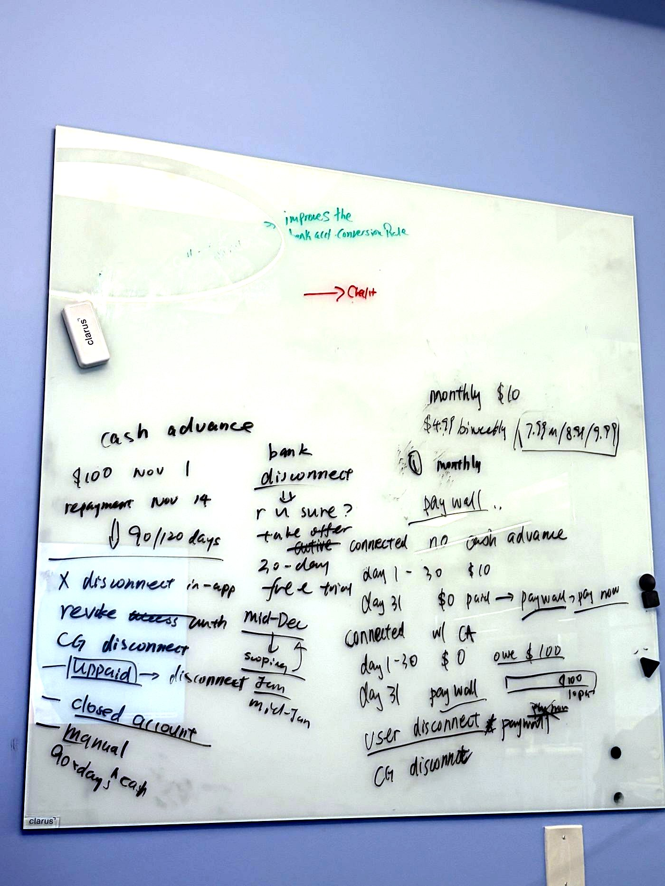
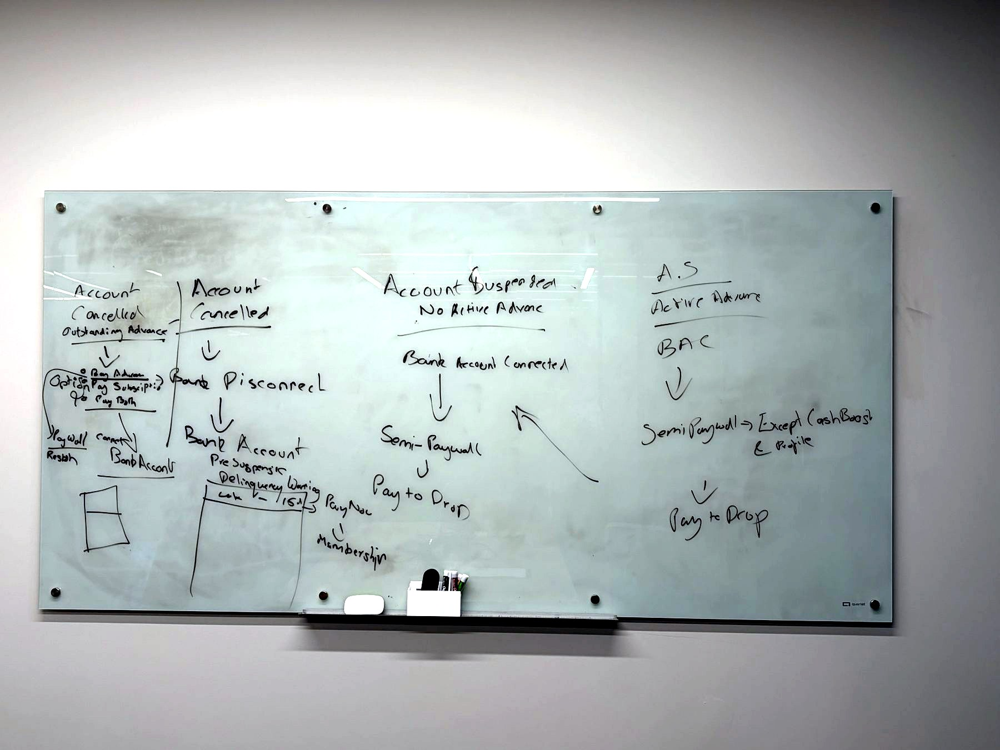
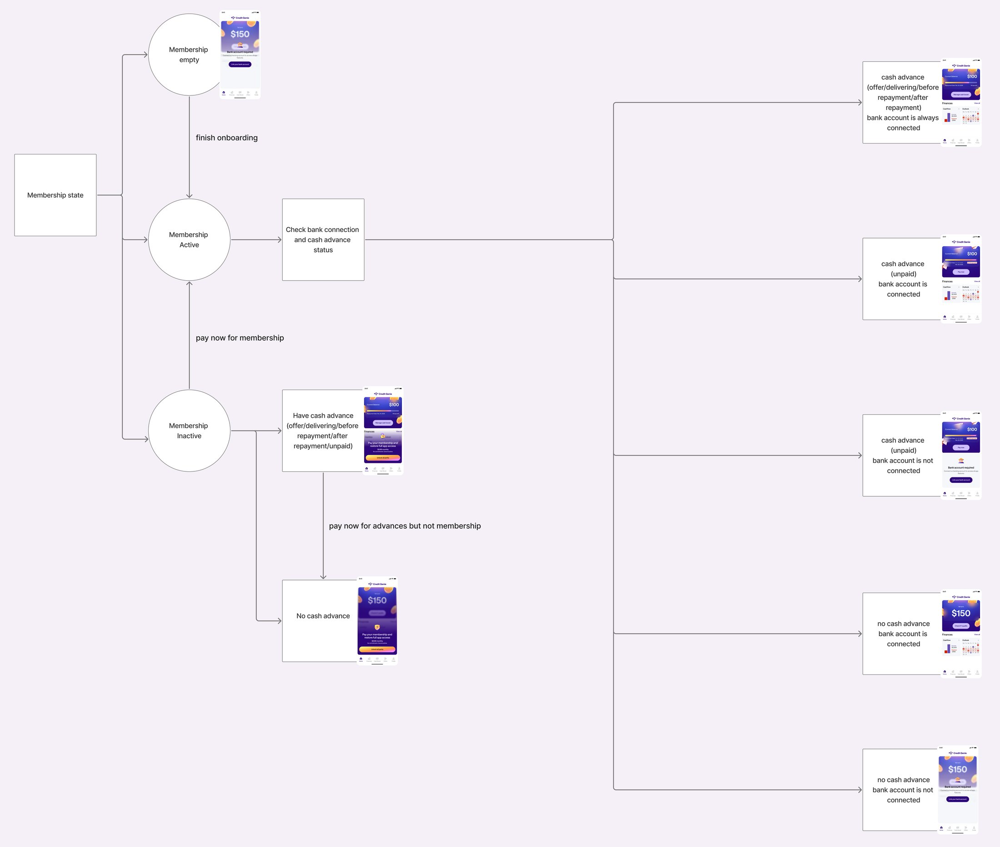
Two membership states
Membership is either Active or Inactive, and neither depends on the bank connection. A member can disconnect their bank and keep full access, which removed the need for the reconnect cooldown.
| Active | Inactive | |
|---|---|---|
| Who | Paid this cycle, or in a free trial | Missed two billing cycles, or canceled before paying |
| App access | Full | Paywall (full or partial) |
| Bank disconnected | Still Active | No change |
| Path back | n/a | Pay now restores access immediately |
Lending checks still apply. App access no longer requires a bank connection, but advance eligibility does.
Paywall
An Inactive member sees one of two paywalls, depending on whether they have an open advance.
- Full paywall for members with no open advance: a plain explanation of the fee and a single Pay now action. Profile stays accessible.
- Partial access for members with an open advance: home still shows the advance and how to repay it, and paying for membership unlocks the rest. Keeping the advance visible lets members repay it and gives them a clear path back to full access.
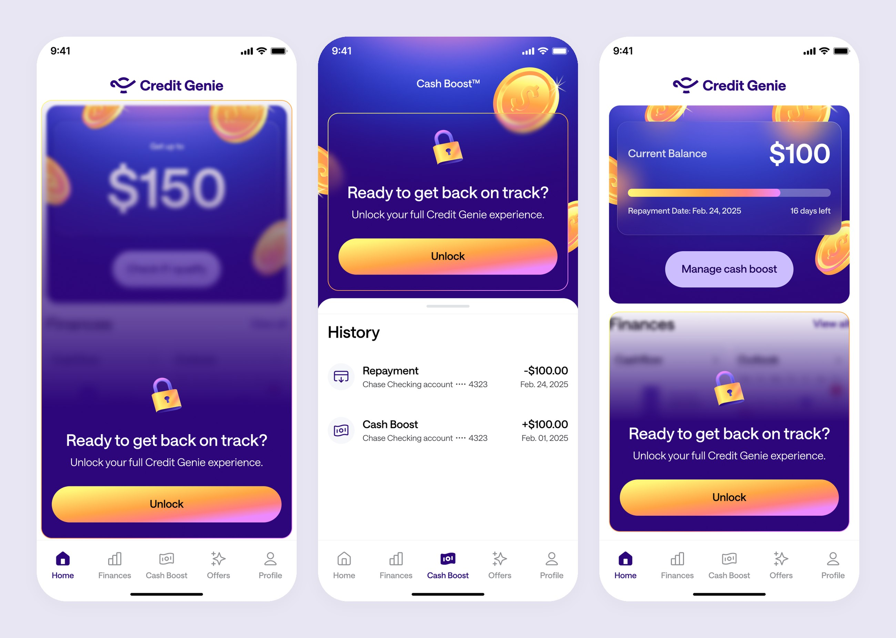
A successful Pay now restores full access immediately and resets the billing cycle to that day. The reactivation screen lists what membership includes, accepts a debit card without leaving the screen, and confirms the amount, date, and card charged.
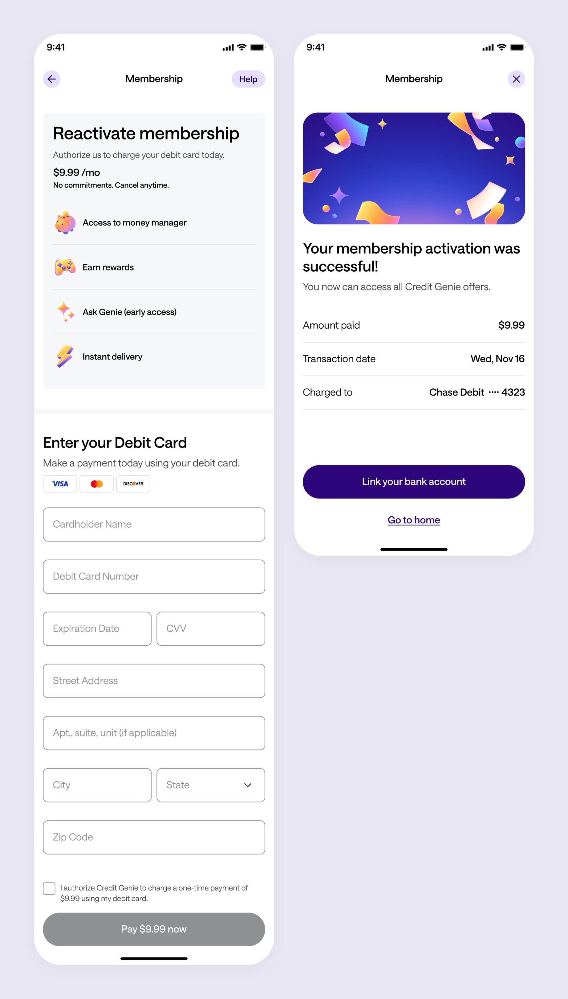
Cancel and renew
Settings shows the price, the next billing date, and a cancel option. The cancel flow states exactly when access ends. A one-time offer of free months appears only in this flow, never during a bank disconnect, so it reads as a retention offer rather than a barrier to leaving.
- Cancel after paying: full access continues until the end of the cycle.
- Cancel while a payment is processing: a message asks the member to try again once the payment settles, rather than predicting the outcome.
- Renew before the cycle ends: one confirmation, with billing unchanged.
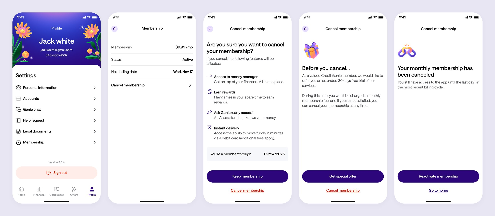
Edge cases
- Payment still processing at cycle end: the member stays Active until it settles, and the next charge waits.
- Billing dates: the first charge always lands on a Friday. Dates that don’t exist in a given month move to the last day of that month.
- Credit-builder members: always Active and managed from their own product. If they leave it, standard membership rules apply.
- Free trial: one per person, regardless of how many times they reconnect.
Account reactivation
Membership made account reactivation possible. Historically, about 711K members had requested to disable their accounts. Disabled members couldn’t sign in or create a new account, and the only way back was through customer support, after a 60-day wait and only with no outstanding balance.
These accounts were in good standing, so the design question was how to confirm the original owner with minimal friction, not how to prevent fraud.
- Explain: at sign-in, a bottom sheet states that the account is disabled and offers to re-enable it. Consent to the terms sits directly above the “Verify to reactivate” button.
- Verify: a one-time code sent by SMS, or by email when the email is verified, confirms identity. Members who can’t access their phone have an alternative path.
- Re-enable: the account reactivates and sign-in continues. Members who forgot their password reset it after re-enabling.
- Guardrails: up to 3 re-enable requests in 7 days, and only accounts disabled at the member’s request are eligible.
- Membership first: reactivated members return under membership, so they regain access without a live bank connection.
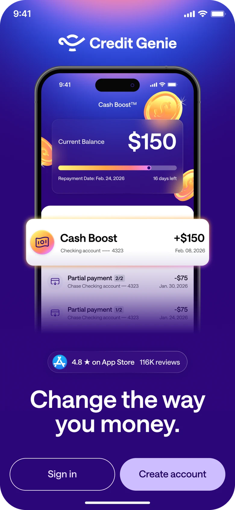
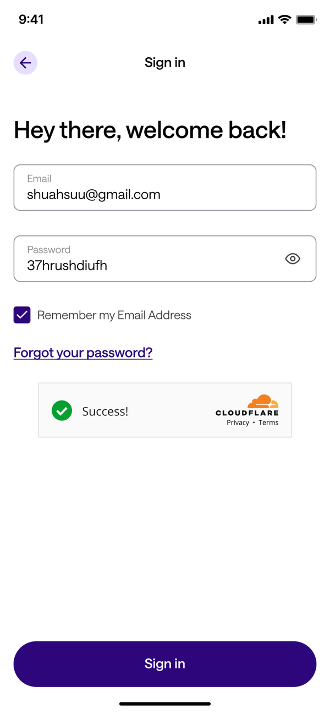
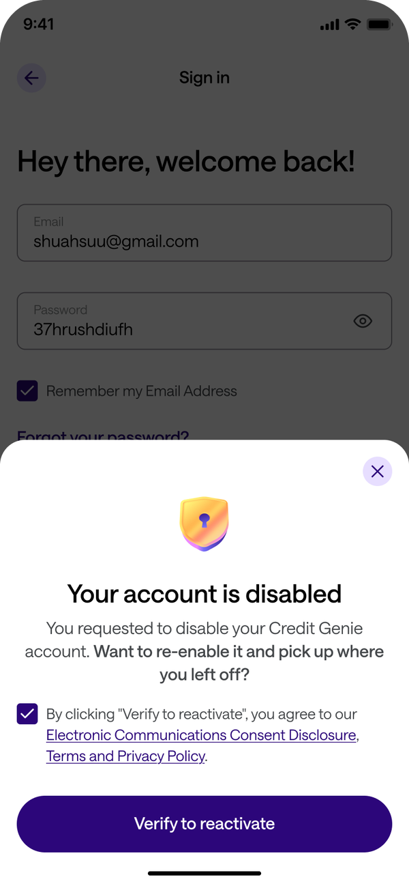
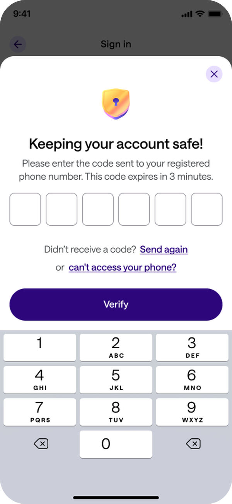
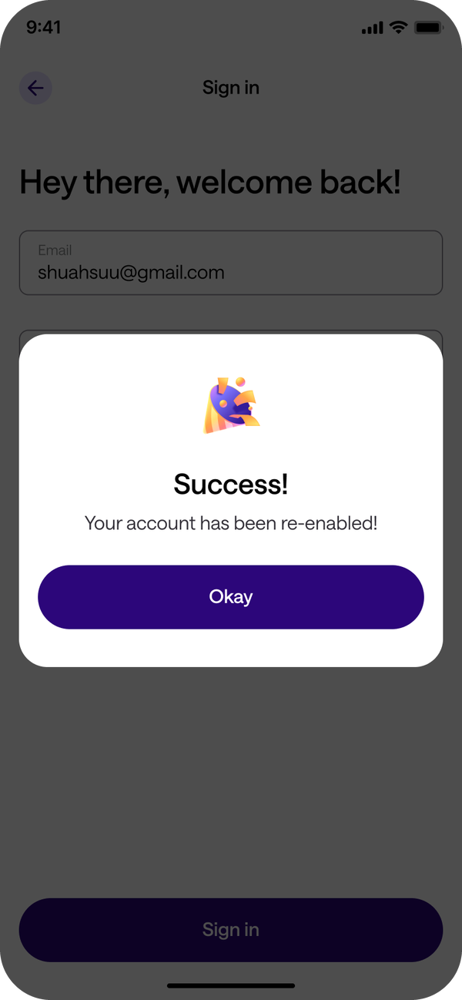
Outcome
- +21%
- monthly active users, from 600K to 700K+ (members with a payment in the last 30 days)
- ~100K
- dormant members reactivated within 3 months of launch
- ~$8M
- in incremental advance origination from reactivated members
- +$700K
- additional advance revenue
- ~$320K
- membership revenue from reactivated accounts in 3 months
- 1 in 3
- active members completed a membership payment in the MVP
Separating app access from the bank connection made account reactivation and a redesigned blocklist possible, which together drove most of the reactivations. Credit Genie moved from a single-product advance app to a multi-product app, where members can use other products without a linked bank.